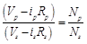
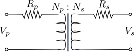

Transformer
Description
The transformer block converts the primary winding voltage level or provides galvanic insulation. A complete dynamic model is omitted for faster simulations. A steady-state electrical model is implemented. Only resistive voltage drops are included and reactances are neglected. The model is flexible and can be used as a single-phase or multi-phase transformer interchangeably. The inputs and outputs are in the synchronous reference frame.
Mathematical Model
A simplified circuit diagram for the modeled transformer is shown in Fig. 5.57. Here the magnetic coupling is ideal and only copper losses are modeled. The input-output electrical relation is:

where Vp is the primary winding voltage, Vs is the secondary winding voltage, ip is the primary winding current, is is the secondary winding current, and Np and Ns are the primary and secondary windings number of turns, respectively.

Fig. 5.57 Simplified circuit model of a transformer
Transformer Mask

Fig. 5.55. Mask inputs to the transformer model
The battery model requires the following mask input values.
- Primary Winding Resistance – (Units – Ohm)
- Secondary Winding Resistance - (Units – Ohm)
- Number of Turns in Primary
- Number of Turns in Secondary.